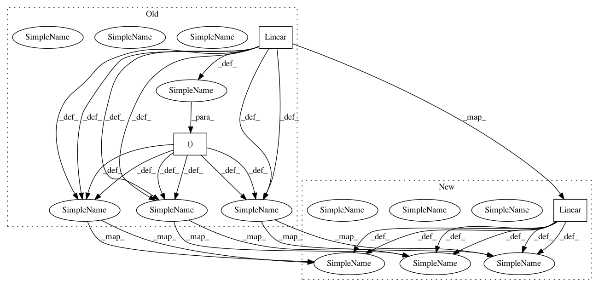

799308b5fb08e939e574c5078b546c24a0967d82,testing/test_mean_functions.py,TestModelCompositionOperations,setUp,#TestModelCompositionOperations#,65
Before Change
one = GPflow.mean_functions.Constant(np.ones(self.output_dim))
linear1 = GPflow.mean_functions.Linear(rng.randn(self.input_dim, self.output_dim), rng.randn(self.output_dim)),
linear2 = GPflow.mean_functions.Linear(rng.randn(self.input_dim, self.output_dim), rng.randn(self.output_dim)),
linear3 = GPflow.mean_functions.Linear(rng.randn(self.input_dim, self.output_dim), rng.randn(self.output_dim)),
const1 = GPflow.mean_functions.Constant(rng.randn(self.output_dim))
const2 = GPflow.mean_functions.Constant(rng.randn(self.output_dim))
const3 = GPflow.mean_functions.Constant(rng.randn(self.output_dim))
const1inv = GPflow.mean_functions.Constant(-1 * const1.c)
linear1inv = GPflow.mean_functions.Linear(-1 * linear1.A, linear1.b * -1)
//a * (b + c)
const_set1 = GPflow.mean_functions.Product(const1,
GPflow.mean_functions.Additive(const2, const3))
linear_set1 = GPflow.mean_functions.Product(linear1,
GPflow.mean_functions.Additive(linear2, linear3))
//ab + ac
const_set2 = GPflow.mean_functions.Additive(GPflow.mean_functions.Product(const1, const2),
GPflow.mean_functions.Product(const1, const3))
linear_set2 = GPflow.mean_functions.Additive(GPflow.mean_functions.Product(linear1, linear2),
GPflow.mean_functions.Product(linear1, linear3))
//a-a = 0, (a + b) -a = b = a + (b - a)
linear1_minus_linear1 = GPflow.mean_functions.Additive(linear1, linear1inv)
const1_minus_const1= GPflow.mean_functions.Additive(const1, const1inv)
comp_minus_constituent1 = GPflow.mean_functions.Additive(GPflow.mean_functions.Additive(linear1, linear2),
linear1inv)
comp_minus_constituent2 = GPflow.mean_functions.Additive(linear1,
GPflow.mean_functions.Additive(linear2,
After Change
one = GPflow.mean_functions.Constant(np.ones(self.output_dim))
linear1 = GPflow.mean_functions.Linear(rng.randn(self.input_dim, self.output_dim), rng.randn(self.output_dim))
linear2 = GPflow.mean_functions.Linear(rng.randn(self.input_dim, self.output_dim), rng.randn(self.output_dim))
linear3 = GPflow.mean_functions.Linear(rng.randn(self.input_dim, self.output_dim), rng.randn(self.output_dim))
const1 = GPflow.mean_functions.Constant(rng.randn(self.output_dim))
const2 = GPflow.mean_functions.Constant(rng.randn(self.output_dim))
const3 = GPflow.mean_functions.Constant(rng.randn(self.output_dim))
const1inv = GPflow.mean_functions.Constant(const1.c.get_free_state() *-1)
linear1inv = GPflow.mean_functions.Linear(A = linear1.A.get_free_state() * -1., b = linear1.b.get_free_state() * -1.)
//a * (b + c)
const_set1 = GPflow.mean_functions.Product(const1,
GPflow.mean_functions.Additive(const2, const3))
linear_set1 = GPflow.mean_functions.Product(linear1,
GPflow.mean_functions.Additive(linear2, linear3))
//ab + ac
const_set2 = GPflow.mean_functions.Additive(GPflow.mean_functions.Product(const1, const2),
GPflow.mean_functions.Product(const1, const3))
linear_set2 = GPflow.mean_functions.Additive(GPflow.mean_functions.Product(linear1, linear2),
GPflow.mean_functions.Product(linear1, linear3))
//a-a = 0, (a + b) -a = b = a + (b - a)
linear1_minus_linear1 = GPflow.mean_functions.Additive(linear1, linear1inv)
const1_minus_const1= GPflow.mean_functions.Additive(const1, const1inv)
comp_minus_constituent1 = GPflow.mean_functions.Additive(GPflow.mean_functions.Additive(linear1, linear2),
linear1inv)
comp_minus_constituent2 = GPflow.mean_functions.Additive(linear1,
GPflow.mean_functions.Additive(linear2,
In pattern: SUPERPATTERN
Frequency: 3
Non-data size: 3
Instances
Project Name: GPflow/GPflow
Commit Name: 799308b5fb08e939e574c5078b546c24a0967d82
Time: 2016-04-29
Author: pleonvil@uos.de
File Name: testing/test_mean_functions.py
Class Name: TestModelCompositionOperations
Method Name: setUp